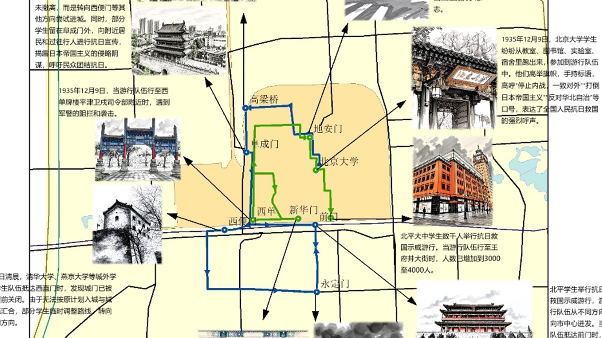

一二九运动，又称为一二九抗日救亡运动。1935年12月9日，北平（北京）大中学生数千人举行了抗日救国示威游行，反对华北自治，反抗日本帝国主义，要求保全中国领土的完整，掀起全国抗日救国新高潮。
一二九运动公开揭露了日本帝国主义侵略中国，并吞华北五省的阴谋，打击了国民党政府的妥协投降政策，大大地促进了中国人民的觉醒。它配合了红军北上抗日，促进了国内和平和对日抗战。它标志着中国人民抗日民主运动新高潮的来到。

1935年抗日救亡运动路线探索
一二九运动，又称为一二九抗日救亡运动。1935年12月9日，北平（北京）大中学生数千人举行了抗日救国示威游行，反对华北自治，反抗日本帝国主义，要求保全中国领土的完整，掀起全国抗日救国新高潮。
一二九运动公开揭露了日本帝国主义侵略中国，并吞华北五省的阴谋，打击了国民党政府的妥协投降政策，大大地促进了中国人民的觉醒。它配合了红军北上抗日，促进了国内和平和对日抗战。它标志着中国人民抗日民主运动新高潮的来到。

抗日救亡集会地
运动发起地
游行重要节点
群众集会地